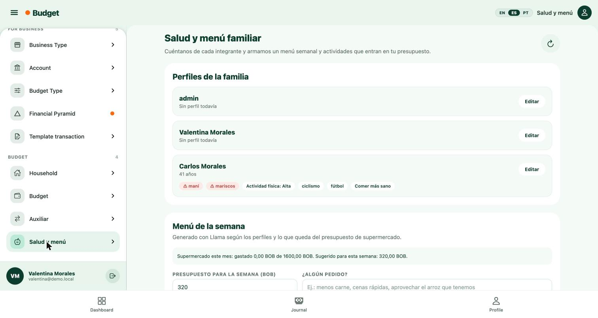
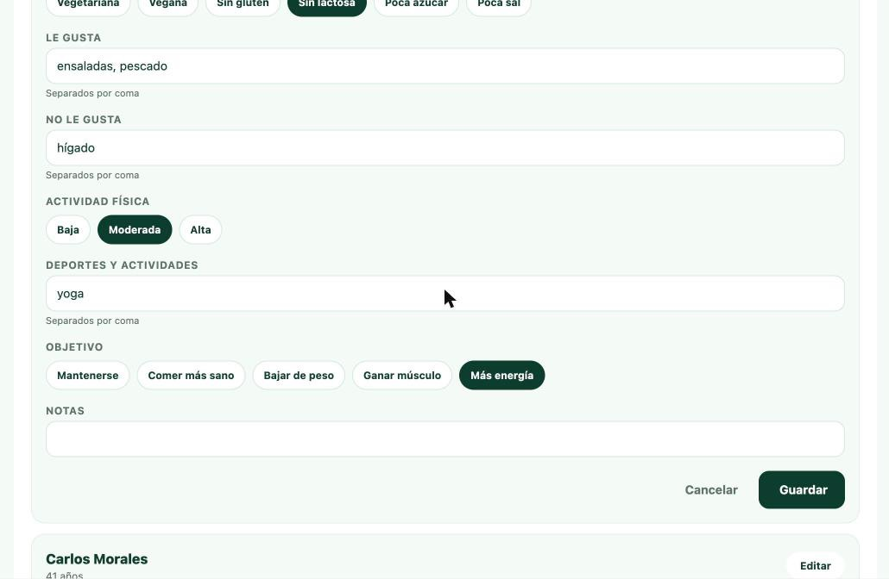
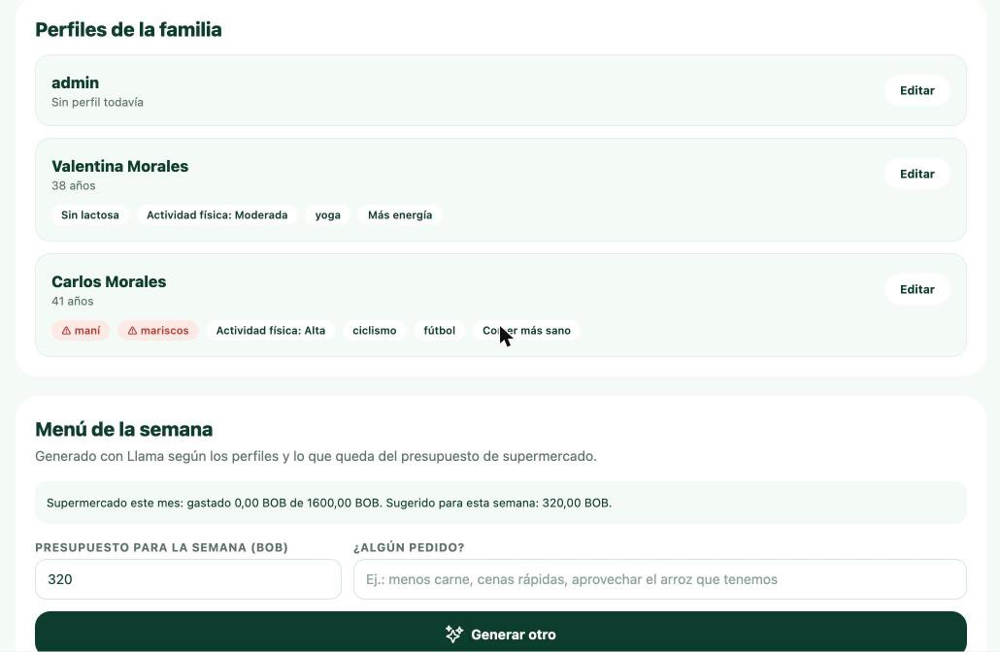
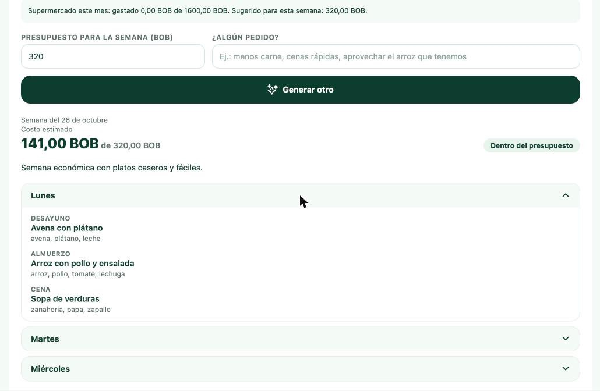
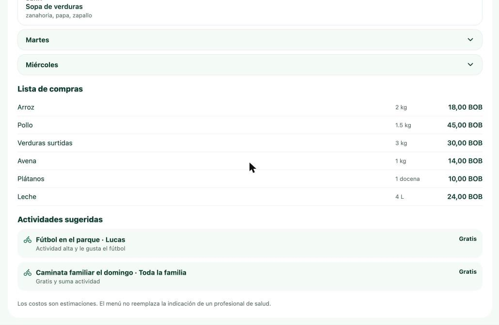

Salud y menú arma el menú de la semana, la lista de compras y actividades físicas para tu familia, sin pasarte del presupuesto de supermercado. Lo hace un asistente de inteligencia artificial (Llama, de Meta) a partir de lo que cuentes de cada integrante.
Para que funcione bien necesitas dos cosas:
Puedes usarlo desde la app o escribiéndole al asistente por WhatsApp.
Abre el menú lateral (☰, arriba a la izquierda) y toca Salud y menú, en la sección BUDGET. La pantalla tiene dos partes: Perfiles de la familia arriba y Menú de la semana abajo.

El botón ↻ de la esquina recarga los datos si alguien cambió algo desde otro dispositivo o desde WhatsApp.
Toca Editar en la tarjeta del integrante, completa lo que sepas y toca Guardar. Ningún campo es obligatorio: puedes empezar con las alergias y sumar el resto después.

| Campo | Qué poner | Ejemplo |
|---|---|---|
| Año de nacimiento | Para adaptar porciones y actividades a la edad | 2013 |
| Alergias | Separadas por coma. Nunca aparecerán en el menú | maní, mariscos |
| Alimentación | Toca las que apliquen | Sin lactosa, Vegetariana |
| Le gusta / No le gusta | Comidas, separadas por coma | pollo, sopas / hígado |
| Actividad física | Baja, Moderada o Alta | Alta |
| Deportes y actividades | Separados por coma | fútbol, yoga |
| Objetivo | Uno solo | Comer más sano |
| Notas | Cualquier detalle extra | Entrena martes y jueves |
Al guardar, la tarjeta muestra la edad y las etiquetas del perfil. Las alergias aparecen en rojo con el símbolo ⚠.

Solo el administrador del hogar puede editar perfiles.
Si ya hay un menú, el botón dice Generar otro y reemplaza el de esa semana.
Arriba ves el costo estimado de la semana frente a tu presupuesto, y una etiqueta: Dentro del presupuesto (verde) o Supera el presupuesto (roja). Debajo, un resumen corto y los días: toca un día para ver desayuno, almuerzo y cena con sus ingredientes.

Más abajo están la lista de compras, con cantidad y precio estimado de cada producto, y las actividades sugeridas para la familia, con su costo o "Gratis". El costo de la semana es la suma de la lista de compras.

Los precios son estimaciones del asistente; los reales dependen de dónde compres.
El asistente de WhatsApp usa los mismos perfiles y menús que la app. Esta parte todavía se está conectando en el bot; los ejemplos muestran cómo funcionará.
| Le escribes | Qué hace |
|---|---|
| "Lucas es alérgico al maní" | Lo guarda en el perfil de Lucas y lo confirma |
| "Ana juega vóley los sábados" | Agrega la actividad a su perfil |
| "Armame el menú de la semana, con cenas rápidas" | Genera el menú y responde con el resumen, el costo, las comidas de hoy y una actividad |
| "Tenemos 250 Bs para la comida de esta semana" | Genera el menú con ese presupuesto |
| "¿Qué cocino hoy?" | Muestra las comidas del día del menú actual |
| "Pasame la lista de compras" | Envía la lista con cantidades y precios |
Por WhatsApp no se manda la semana entera de una vez: el asistente ofrece los otros días si los pides.
| Mensaje o pregunta | Qué significa | Qué hacer |
|---|---|---|
| ¿Puede aparecer un alérgeno en el menú? | No. Si el asistente propone algo con un alérgeno, se corrige solo; si no puede, el menú no se guarda | Nada; revisa que las alergias estén bien escritas |
| "El menú propuesto incluía un alérgeno y lo descartamos" | El asistente no logró un menú sin ese alérgeno | Toca Generar otra vez |
| Etiqueta "Supera el presupuesto" | Ni con un segundo intento entró en el monto | Sube el presupuesto o pide "más barato" en el pedido |
| "No hay presupuesto de supermercado definido" | El hogar no tiene límite en la categoría Supermercado | Escribe el monto de la semana o carga el límite en Budget |
| "No se pudo guardar. Solo el administrador..." | Tu usuario no es administrador del hogar | Pídele al administrador que edite el perfil |
| "El asistente de IA no está configurado" | Falta la clave de Llama en el servidor | Avisar al equipo técnico |
| "Demasiados pedidos seguidos" | Se generaron más de 10 menús en un minuto | Esperar un minuto |
El menú y las actividades son sugerencias. No reemplazan la indicación de un médico o nutricionista.